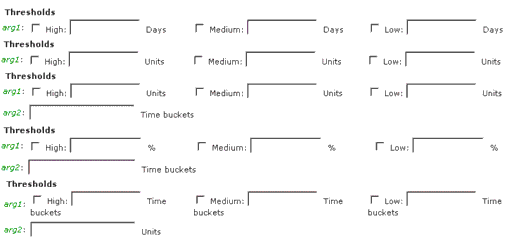

Timogen Web Site
Voice: (650) 903-9888
Fax: (650) 903-9327
info@timogen.coms
Event Alert Thresholds
Threshold values are argument values that match placeholders (variables) in the alert category. Most Alerts use a single variable defined in units, percentage, or time. Some Alerts use two variables, generally units or percentage filtered by their occurrence in time buckets (the second variable). When an Alert has two variables, the threshold value (units or percentage) may be set individually for High, Medium, and Low levels but the second (no of time buckets) variable must be the same for all threshold values.
For example, if the alert category is as follows:
Item has ____ quantity that is more than ___ days old.In this example, if you choose to set the threshold values as follows:
High - 30 units Medium - 20 units Low - 10 unitsTime buckets - 7If this were the case, an Alert would be posted when:
High: 30 inventory units were more than 7 time buckets old.Medium: 20 inventory units were more than 7 time buckets old.Low: 10 inventory units were more than 7 time buckets old.The Thresholds section for Event Alert definition can look like one of the following:

|
|
Timogen Systems Timogen Web Site Voice: (650) 903-9888 Fax: (650) 903-9327 info@timogen.coms |